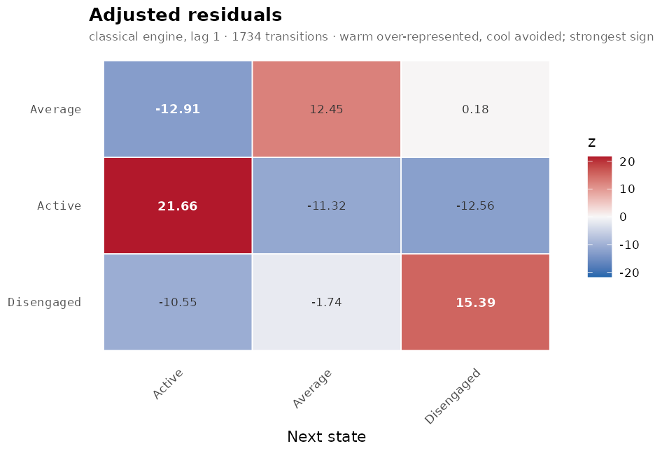

Lag sequential analysis
Written by Mohammed Saqr and Sonsoles López-Pernas
Source:vignettes/lsa.Rmd
lsa.RmdLag sequential analysis (LSA) studies the order in which categorical events occur (Sackett, 1979; Bakeman & Gottman, 1997). A process is coded as a sequence of states, such as weekly engagement levels or the moves of a collaborative discussion, and the analysis asks whether one state is followed by another more often, or less often, than the base rates of the two states alone would predict. A transition that occurs more often than expected is a sequential regularity of the process; a transition that occurs less often is an avoidance. Neither can be read from frequencies alone: a frequent transition may only reflect two busy states, and a rare transition may still occur far more often than chance allows.
The method reduces the data to a lagged contingency table and tests
every cell of it against sequential independence, the model in which the
next state carries no memory of the current one. The result is a set of
tested transitions, each with a direction, a size, and a p-value,
together with an omnibus test of the whole table.
lagdynamics fits the model in one call, lsa(),
and returns every part of it as a tidy data frame.
Data
engagement records the weekly engagement state of 138
students over 15 weeks, one row per student and one column per week.
- Sequence: each row is one student’s sequence.
- Order: the column order (weeks 1 to 15) orders the states.
-
State: each cell is
Active,Average, orDisengaged;NAmarks a missing week and is skipped rather than counted as a state.
Two rows are missing in every week, so the model is fitted to 136 sequences.
library(lagdynamics)
head(engagement)
#> 1 2 3 4 5 6 7 8 9
#> 1 Active Disengaged Disengaged Disengaged Active Active Active Active Average
#> 2 Average Average Average Average Average Average Average Average Average
#> 3 Average Active Active Active Active Active Active Active Active
#> 4 Active Active Active Active Active Average Average Active Active
#> 5 Active Active Active Average Active Average Active Active Active
#> 6 Average Average Disengaged Average Disengaged Disengaged Average Average Average
#> 10 11 12 13 14 15
#> 1 Active Average Active <NA> <NA> <NA>
#> 2 Active Average Average Average Average Average
#> 3 Average Active Active Active Active Active
#> 4 Active Average Active Average Active Average
#> 5 Disengaged Active Active Active Average Average
#> 6 Disengaged Average Disengaged Average Average AverageThe lagged contingency table
Let the process visit states. At lag , every pair of positions steps apart within a sequence is one transition, and the transitions are tabulated in a table whose cell counts the occasions on which state was followed, positions later, by state . At lag 1 this is the table of immediate successors. Pairs never cross the boundary between two sequences, so the last week of one student and the first week of the next are not counted.
Two descriptive quantities come directly from the table. The transitional probability , where is the row total, is the share of moves out of state that reach state ; it describes where the process goes. The expected count under independence,
with the column total and the number of transitions, is the count the cell would reach if the next state were drawn from the base rates regardless of the current one.
Adjusted residuals and Yule’s Q
The adjusted residual standardises the gap between the observed and the expected count (Haberman, 1973),
and is approximately standard normal under independence. A residual above 1.96 marks a transition that is over-represented at the 5% level, and a residual below -1.96 one that is under-represented. The residual is the evidential unit of LSA: it states how far a transition departs from chance on a common scale, whatever the base rates of its states.
The residual is a test statistic, so it grows with the number of transitions. Yule’s Q is the matching effect size. For each cell the table is collapsed to a 2-by-2 table (from or not, to or not) with cells , , , and , and
which lies between -1 (the transition never occurs) and 1 (state is always followed by state ), with 0 at independence. Because it does not grow with sample size, Q is the scale on which transitions of different data sets or groups are compared (Bakeman & Quera, 2011).
Fitting the model
lsa() takes the wide data frame directly: rows are
sequences and columns are ordered positions. The default is the
classical engine at lag 1.
fit <- lsa(engagement)
fit
#> Lag Sequential Analysis - classical (lag 1, directed)
#> 3 states | 1734 transitions | 1870 events | 136 sequences
#> states: Active, Average, Disengaged
#> independence: G² = 618.3, df = 4, p <2e-16
#>
#> Significant transitions (p < 0.05): 7 of 9
#> strongest over-represented (of 3):
#> Active -> Active z = +21.7 ***
#> Disengaged -> Disengaged z = +15.4 ***
#> Average -> Average z = +12.5 ***
#>
#> Initial states:
#> Active 0.382 ████████████████████████
#> Average 0.368 ███████████████████████
#> Disengaged 0.250 ████████████████The model counts 1734 transitions among 1870 events in 136 sequences. The omnibus likelihood-ratio test of independence is on 4 degrees of freedom, so the next week’s state depends strongly on the current one. Seven of the nine transitions depart from independence, and the three strongest over-represented transitions are the three self-transitions.
Which transitions depart from chance
transitions() returns one row per ordered pair with the
observed and expected counts, the transitional probability
(prob), the adjusted residual (adj_res), its
p-value, Yule’s Q, and further association measures. The argument
significant = TRUE keeps the transitions whose p-value is
below alpha, and sort = "strength" orders them
by the absolute residual.
transitions(fit, significant = TRUE, sort = "strength")
#> from to lag count expected prob prob_col adj_res p yules_q
#> 1 Active Active 1 459 247 0.698 0.7051 21.7 4.60e-104 0.828
#> 2 Disengaged Disengaged 1 157 60 0.483 0.4906 15.4 1.90e-53 0.754
#> 3 Average Active 1 153 282 0.204 0.2350 -12.9 4.16e-38 -0.601
#> 4 Active Disengaged 1 23 121 0.035 0.0719 -12.6 3.64e-36 -0.826
#> 5 Average Average 1 458 330 0.610 0.6003 12.5 1.35e-35 0.553
#> 6 Active Average 1 176 290 0.267 0.2307 -11.3 1.06e-29 -0.534
#> 7 Disengaged Active 1 39 122 0.120 0.0599 -10.5 5.11e-26 -0.698
#> kappa kappa_z kappa_p lift sign significant
#> 1 0.444 19.19 4.68e-82 1.858 over TRUE
#> 2 0.314 13.56 7.34e-42 2.618 over TRUE
#> 3 -0.499 -14.70 6.81e-49 0.543 under TRUE
#> 4 -0.827 -13.41 5.14e-41 0.189 under TRUE
#> 5 0.227 9.83 7.97e-23 1.386 over TRUE
#> 6 -0.424 -12.48 9.39e-36 0.608 under TRUE
#> 7 -0.707 -11.46 2.03e-30 0.320 under TRUEActive -> Active is the strongest regularity: it
occurred 459 times against 247 expected, an adjusted residual of 21.7
and a Yule’s Q of 0.828. Active students therefore stay active from one
week to the next far more often than the base rate of activity predicts.
Disengaged -> Disengaged (z = 15.4, Q = 0.754) and
Average -> Average (z = 12.5, Q = 0.553) are the other
two persistences, so every state tends to repeat. The avoidances are as
informative. Active -> Disengaged occurred 23 times
against 121 expected (z = -12.6, Q = -0.826): an active student almost
never drops to disengagement in a single week.
Disengaged -> Active is also avoided (z = -10.5, Q =
-0.698), so recovery from disengagement to full activity is rare. Moves
between Average and Disengaged, by contrast,
occur at the rate the base rates predict.
The two transitions missing from this table,
Average -> Disengaged and
Disengaged -> Average, are the ones that occur at the
rate chance predicts. direction = "over" or
direction = "under" keeps only one sign, and
min_count drops pairs with few observations.
transitions(fit, direction = "under", sort = "strength")
#> from to lag count expected prob prob_col adj_res p yules_q kappa
#> 1 Average Active 1 153 282 0.204 0.2350 -12.9 4.16e-38 -0.601 -0.499
#> 2 Active Disengaged 1 23 121 0.035 0.0719 -12.6 3.64e-36 -0.826 -0.827
#> 3 Active Average 1 176 290 0.267 0.2307 -11.3 1.06e-29 -0.534 -0.424
#> 4 Disengaged Active 1 39 122 0.120 0.0599 -10.5 5.11e-26 -0.698 -0.707
#> kappa_z kappa_p lift sign significant
#> 1 -14.7 6.81e-49 0.543 under TRUE
#> 2 -13.4 5.14e-41 0.189 under TRUE
#> 3 -12.5 9.39e-36 0.608 under TRUE
#> 4 -11.5 2.03e-30 0.320 under TRUEFour transitions are significantly avoided, and all four connect
Active with another state, in either direction. Active
engagement is therefore a closed state: students who hold it keep it,
and students outside it rarely reach it in one week
(Average -> Active, z = -12.9).
Is the table as a whole dependent
tests() returns the omnibus tests of independence for
the whole table: the likelihood-ratio statistic (lrx2) and
Pearson’s chi-squared (x2).
tests(fit)
#> test statistic df p
#> 1 lrx2 618 4 1.69e-132
#> 2 x2 629 4 7.41e-135Both statistics reject independence ( and on 4 degrees of freedom, p far below 0.001). A non-significant omnibus test would give no basis for interpreting individual residuals, so this test is read before the transitions.
States and starting points
nodes() returns one row per state with the number of
transitions it sends and receives, and initial() the share
of sequences that start in each state.
nodes(fit)
#> state outgoing incoming
#> 1 Active 658 651
#> 2 Average 751 763
#> 3 Disengaged 325 320
initial(fit)
#> state init_prob
#> 1 Active 0.382
#> 2 Average 0.368
#> 3 Disengaged 0.250Average is the busiest state (751 outgoing, 763 incoming
transitions) and Disengaged the least visited (325 and
320). These totals are what the expected counts control for:
Average is not credited with regularities on the strength
of its volume. Sequences start in Active (0.382) and
Average (0.368) more often than in Disengaged
(0.250).
A summary of the model
summary() returns a summary object. Printed, it gives
the model in a few lines; its tables are read with
as.data.frame().
fit_summary <- summary(fit)
fit_summary
#> Lag sequential analysis: classical engine, lag 1
#> 3 states, 1734 transitions, 1870 events, 136 sequences
#> significant transitions (p < 0.05): 7 of 9
#> likelihood-ratio test: G² = 618.31, df = 4, p <2e-16
#> Pearson test: χ² = 629.20, df = 4, p <2e-16
#>
#> State activity (share of transitions out and in):
#> Active out 0.379 ██████████ in 0.375 ██████████
#> Average out 0.433 ████████████ in 0.440 ████████████
#> Disengaged out 0.187 █████ in 0.185 █████
as.data.frame(fit_summary)
#> engine lag n_states n_sequences n_events n_transitions n_significant alpha lrx2
#> 1 classical 1 3 136 1870 1734 7 0.05 618
#> lrx2_df lrx2_p x2 x2_df x2_p
#> 1 4 1.69e-132 629 4 7.41e-135
as.data.frame(fit_summary, what = "nodes")
#> state outgoing incoming out_share in_share init_prob
#> 1 Active 658 651 0.379 0.375 0.382
#> 2 Average 751 763 0.433 0.440 0.368
#> 3 Disengaged 325 320 0.187 0.185 0.250The overview table is one row with the dimensions and omnibus tests
of the model, the form to collect when several models are fitted. The
node table adds the shares of outgoing and incoming transitions and the
initial probability for each state: Average carries 43.3%
of the outgoing transitions and Disengaged 18.7%.
Transition probabilities
transition_probabilities() returns the transitional
probabilities
as a tidy table, one row per ordered pair. They are the edge weights of
a transition network analysis model and the input that probability-based
tools expect.
transition_probabilities(fit)
#> from to prob
#> 1 Active Active 0.698
#> 2 Active Average 0.267
#> 3 Active Disengaged 0.035
#> 4 Average Active 0.204
#> 5 Average Average 0.610
#> 6 Average Disengaged 0.186
#> 7 Disengaged Active 0.120
#> 8 Disengaged Average 0.397
#> 9 Disengaged Disengaged 0.483Each state is most often followed by itself: 0.698 for
Active, 0.610 for Average, and 0.483 for
Disengaged. The probabilities and the residuals answer
different questions. Disengaged -> Average has a
probability of 0.397, the second largest move out of
Disengaged, yet its residual (-1.7) is not significant: the
move is frequent because Average is a busy state, not
because disengaged students are drawn to it.
Residual heatmap
plot() draws a residual heatmap by default. Rows are the
current states, columns the next states, and the fill is the adjusted
residual on a diverging scale.
plot(fit)
The heatmap shows the structure of the model at a glance: the
diagonal is uniformly over-represented, the four off-diagonal cells in
the Active row and column are avoided, and the two cells
linking Average and Disengaged sit near zero.
The process is one of persistence, with movement mostly confined to the
two lower states.
Where next
- Lag transition networks: the fitted model drawn as a residual, Yule’s Q, or probability network.
- Evaluating transitions: edge uncertainty, case-drop stability, split-half reliability, and a permutation null.
- Comparing groups: grouped fits and permutation and Bayesian tests of group differences.
- Workflow, event logs, engines, lags and structural zeros, and plotting: the guides to each part of the package.
References
Bakeman, R., & Gottman, J. M. (1997). Observing interaction: An introduction to sequential analysis (2nd ed.). Cambridge University Press.
Bakeman, R., & Quera, V. (2011). Sequential analysis and observational methods for the behavioral sciences. Cambridge University Press.
Haberman, S. J. (1973). The analysis of residuals in cross-classified tables. Biometrics, 29, 205-220.
Sackett, G. P. (1979). The lag sequential analysis of contingency and cyclicity in behavioral interaction research. In J. D. Osofsky (Ed.), Handbook of infant development (pp. 623-649). Wiley.